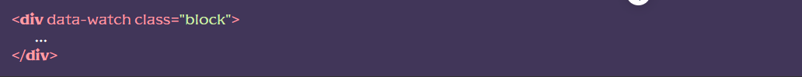
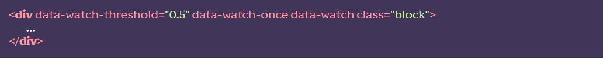
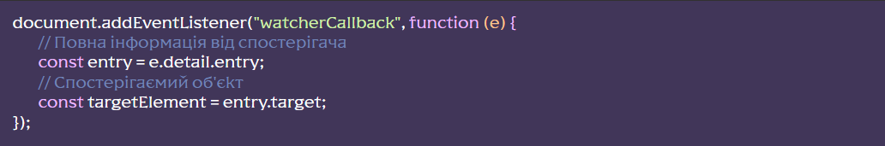

Підключення модуля
[HTML]Для об’єкта, за яким потрібно встановити спостереження, слід додати атрибутdata-watch 
[JS] У файлі js/app.js розкоментувати рядок import ‘./libs/watcher.js’
Додаткові налаштування:
- data-watch-root=’селектор’ – селектор батька всередині якого спостерігатиме за об’єктом. За замовчуванням <body>
- data-watch-margin=’значення’ – відступ від батька. Вказуємо значення у PX або у %
- data-watch-threshold=’значення’ – відсоток показу об’єкта для спрацьовування. Де 1 = 100% показ об’єкта. Вказуємо лише цілі чи десяткові числа, за замовчуванням 0. Може містити масив значень через кому.
- data-watch-once – спостерігати лише один раз. Тобто клас до об’єкта додасться тільки один раз і не буде прибраний при виході з в’юпорту.
Приклад – клас додасться лише один раз, з появою об’єкта на 50% його висоти:
Події
Після кожного спрацювання спостерігача виникає подія watcherСallback, його можна відловити в будь-якій частині коду:
Розташування та додаткові дані
Функціонал міститься у файлі js/libs/watcher.js. Назва класу ScrollWatcher. Модуль побудований на основі Intersection Observer API.
Модуль забезпечений системою FLS і повідомлятиме про свої дії в консоль браузера